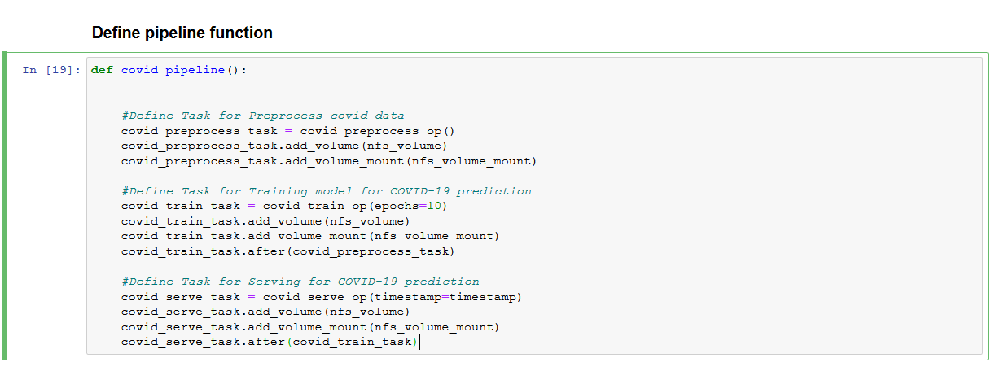
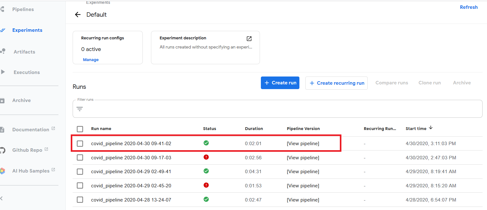

COVID-19 Forecasting using Kubeflow Pipelines¶
What we're going to build¶
To train, serve a COVID model using Kubeflow Pipeline and get prediction for client request through Jupyter notebook.

Infrastructure Used¶
- Cisco UCS - C240M5 and C480ML
Upload Notebook file¶
Upload COVID-Pipeline-Deployment.ipynb
Run COVID Pipeline¶
Open the COVID-Pipeline-Deployment.ipynb file and run pipeline
Clone git repo

Load The Components

Define the COVID Pipeline Function

Once COVID Pipeline is executed, Experiment and Run link will be generated and displayed as output

Click on latest experiment which is created

Pipeline components execution can be viewed as below.
Logs of COVID Preprocessing Component
Logs of COVID Training Component

Logs of COVID TF Serving Component
Once pipeline execution is completed return to notebook and execute next cell
Pre-process prediction dataset
Make a REST API invocation to serving endpoint for prediction

Post-processing on the prediction

Forecast Table with confirmed Cases

Plot predicted cases in upcoming days